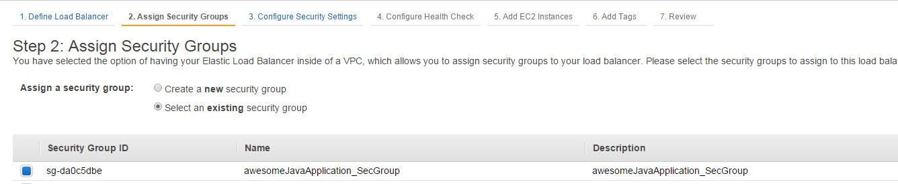

OpenAperture
Cloud Application Management Platform
- AWS account (http://aws.amazon.com/ )
- GitHub account (https://github.com)
- semaphoreci account (https://semaphoreci.com/)
- cool Java application, which runs in a Tomcat
- this guide
Getting Started with OpenAperture - Java Edition
You have an awesome Java Application and want to bring it to the Cloud? No problem with OpenAperture. OpenAperture gives you the possibility to shift the availability of your application to a whole new level and make it accessible from everywhere. There is no need for expensive hardware or high quality platform skills, you just need the following things:
In this tiny guide, I will show you the necessary steps to deploy your Application to the cloud with OpenAperture.
1. Create a Core OS cluster on AWS2. Dockerize your application aka creating a git repo
3. Deploy your application
4. Test the result of the deployment:
5. Create a Load Balancer
1. Create a Core OS cluster on AWS
You have to launch a new EC2 instance:
Choose the latest CoreOS-stable (hvm) image:
Choose the instance type, which fits your application requirements and your budget:
Configure Instance Details:
Number of Instance: Defines the size of your cluster (please choose an uneven number)
Network: Create a VPC for your application and select it
Subnet: Create a subnet in your VPC and select it
You can use the default values for the remaining settings.
Please copy the cloud config into the User Data, which you can find in the Advanced Details.
You have to generate an ID for your cluster and copy it into the cloud config:
You can use the default storage settings. If your application needs additional storage, you are able to increase the size of the root volume or add an additional one. Please note, that OpenAperture uses the Instance Store for the deployment of your application (Docker images and container).
Add the following tags:
Create a new security group with the following rules:
Review the settings and launch the cluster (create a key pair for it):
2. Dockerize your application aka creating a git repo
OpenAperture runs your application in docker containers, therefore it builds a Docker image and deploys that image to the instances of the CoreOS cluster. Never used Docker? Don’t be scared, it isn’t that complicated. First we need a git repo which includes all the needed files for the deployment (name it ApplicationName_docker) with the following structure:
on GitHub
Dockerfile.eex:
This is an Elixir templated version of the Dockerfile. During the course of the deployment, this will be turned into a standard Dockerfile (more info). This defines the image and will be deployed on the CoreOS machines in the cluster. We already offer an pre-configured Docker image with a Tomcat and all its dependencies, which is referenced in the Dockerfile (perceptivecloud/stack-tomcat7). We recommend to store the commands for downloading/building the artifacts and copying of the configuration files in separate file (install.sh), which is executed from the Dockerfile.
Application Name@.service.eex:
This is an Elixir templated version of the Fleet unit file (https://coreos.com/docs/launching-containers/launching/fleet-unit-files/). During the course of the deployment, this will be turned into a standard unit file, that is used by Fleet to spin up the containers based on the image, which was created by the Dockerfile . By default, OpenAperture will execute a term replacement for the following keywords:
timestamp
commit_hash
commands (gets executed in every instance in the cluster):
docker kill - stops running container
docker rm - removes container
docker rmi - removes old image
docker login - performs a login to docker hub (sign up with github possible)
docker pull - downloads image
docker run - starts a container from the image
etcd.json:
This file is used to identify the target CoreOS cluster of the deployment. It must contain a JSON struct with the cluster ID, which you inserted into the cloud config at the creation of the CoreOS cluster. The structure is as follows:
{
"token": "123abc"
}
docker.json:
This file defines the metadata of the image, which is created by the OpenAperture build server. It includes the image name, the repository and the target URL (without https://registry.hub.docker.com/u/). The structure is as follows:
{
"name": "awesomeApplication",
"repository":"Docker Hub Organization/awesomeJavaApplication",
"docker_url": "Docker Hub Organization/awesomeJavaApplication"
}
Application specific configuration files:
You are able to include additional configuration files, which are necessary for running your application, into the git repository and copy them to any directory of the docker container with a command in the install.sh
3. Deploy your application
Now we come to the exciting part, the deployment of your application to the CoreOS Cluster. We are using semaphoreci for that job (link).
Add a project:
Select the git repo of your Java application (not _docker):
Enter build settings, which verify that your application can be build successfully :
Please note that these are only example commands!
Now you can set up a deployment:

Select Generic Deployment:
You can choose, if the deployment is executed after every build (of a specific branch) or just manually:
The most important setting of the deployment are of course the deploy commands:
Let us check each command:
wget -O spyglass https://s3.amazonaws.com/lexmark-devops-artifacts/binaries/spyglass-linux-amd64
# downloads the tool spyglass, which provides a command-line interface for interacting with the OpenAperture Build Server.
chmod +x spyglass
#makes the spyglass tool executable
./spyglass -f deploy --force -c $REVISION -e master OpenAperture/awesomeJavaApplication_docker
# execute spyglass, which starts the OpenAperture deployment to the CoreOS cluster. You hand over the commit_hash for the deployment as first parameter, which can be used in the elixir template files (Application Name@.service.eex and Dockerfile.eex) and has to be unique. In this example we use the semaphore environment variable $REVISION, which contains the git revision (you can find a list of available environment variables here).The second and third parameter of the function are the name of the git repository (third) you created earlier, which includes all the necessary configuration files and the branch (second).
After entering the deploy commands you can optionally enter a SSH key and name the deployment:

Congratulations, you finished the configuration! Let us deploy your application for the first time. Go to the project overview and select a branch + build, you want to deploy to the cluster:
Click on Deploy Manually, select the created deployment and enjoy the show:
Tip: You can also create deployments for the upload of your build artifacts (e.g. to AWS S3)
4. Test the result of the deployment:
Check the Public IP of one machine in the cluster:
and call your webapp in the tomcat:
5. Create a Load Balancer
A cluster has no positive effect, if you pick a single instance out of it. Therefore we create an AWS load balancer now.
Click on Create Load Balancer (AWS EC2 -> Load Balancers):
As usual you have to choose a name, a vpc and and subnet for it. Additionally you have to assign a Load Balancer port to a port of the instance:
We assign the port 80 (HTTP) to the port 8080 and port 443 (HTTPS) to port 443. These ports were configured as Connector ports in the server.xml of the tomcat.
Select your security group (created with the CoreOS cluster) in the next step:

Choose a SSL Certificate in case of HTTPS and use the default settings for the other Security Settings):
The health check is a good tool for checking the availability of your instances in the cluster. Enter a ping path, which fits your application:
Last but not least you have to add the instances of your CoreOS cluster:
If we did everything right we should see 3 instances in service:
The Load Balancer provides us a DNS Name, which you can pass to a AWS Route53 entry or call directly in the browser:
back to top